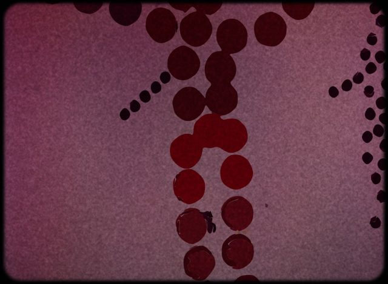
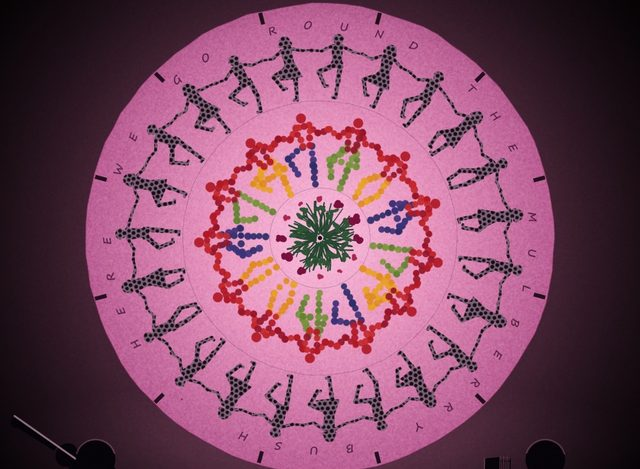
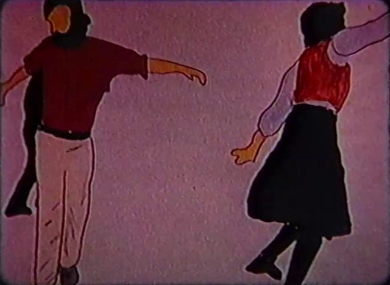

A film from 1976 · two web pieces from 2026
Mulberry Bush
Mulberry Bush is a short hand-drawn film that Ken Kahn made in 1976. Dancers go round to “Here We Go Round the Mulberry Bush”, drawn first in paint, then as shadows, stripes, dots and coloured circles. It was first shown inside a live piece: four dancers circled a backlit screen, the film was projected, and the four danced again.
Fifty years on, Ken and Claude made two versions of it for the browser.
Trailer
Thirty seconds: a few bits of the 1976 film, then the traced version, then Round the Mulberry Bush.
Three versions
-

Traced Every drawing in the film, traced and redrawn by your browser, with a new band playing on the beat of the original recording. You can redraw the dancers in the film's other styles. -

Round the Mulberry Bush A reinterpretation with nothing traced. Shadow dancers circle a paper screen that turns out to be a spinning wheel of dancers. You can turn the wheel yourself. -

The original film The 1976 film itself, just under three minutes, on YouTube. Music by Nancy Koch, accordion, and Tommy Magee, fiddle.
About the project
- Making Mulberry BushClaude's report on how both web versions were made: what was done, why, and with which tools.
- Ken's post about the projectKen Kahn's own account.